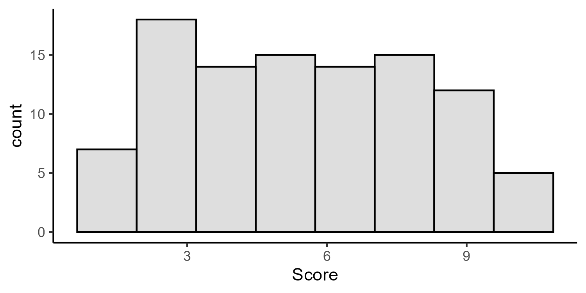

Practical #3 Magnitude of Manipulations
1. Experiments: Manipulating Independent Variable(s)
If we want to go further from just showing an association to establishing that one construct directly influences or causes changes in another, we need to do experiments. In an experiments, we manipulate one variable to see if those unpredictable/independent manipulations create predictable effects on the dependent variable.
Think of a way in which you could manipulate an independent variable to create changes in your dependent variable of interest. In a short paragraph (3-5 sentences):
Discuss your idea for how you could manipulate one thing (the independent variable) to change the dependent variable.
Be clear on the direction of manipulation, e.g., if one increases how much an assignment is worth, a student’s nervous level will also increase
Provide an in-text citation to (at least) one peer-reviewed article that shows that the constructs might be related. If you can’t find evidence of the exact same manipulation, show an association and describe how you could change it into a manipulation, or show how the manipulation has been used in another context but could be applied here.
If there is no direct evidence or reporting of this relationship, then cite an article that shows that these constructs could be related.
Below the paragraph, provide an APA style reference to the paper that you cited.
2. Proposed Magnitude of the effect of your IV on the DV
When designing an experiment, the predicted magnitude of an effect is a key factor, as this can be used to determine the most appropriate amount of participants (the larger the proposed effect, the fewer participants would be needed to detect it).
Based on your literature searches, how big of an effect are you predicting the experimental manipulation that you outlined above would produce on the DV of interest?
Using numeric values and descriptive language, explain the predicted magnitude of your proposed IV on the DV of interest.
A good place to start would be to review findings using your DV in the literature. How varied are responses using your chosen measure? Do participants usually respond / perform in consistent ways? Or is there a lot of variability in responses? Do different studies that report this measure have similar mean values in their control groups? Understanding how much spread of scores you might expect to see in your control condition could help you think critically about what you would expect data from your experimental group to look like.
Remember, that the magnitude of the effect does not determine the importance of your findings - many important findings from the field of psychology involve quantification of small effects.
Use at least one peer-reviewed reference to support the proposed magnitude of the relationship between your IV and DV.
3. Connect the theory to computation in R!
Generate an example mock data set that includes the variables that you described in part 2 (above) with 100 participants per group. Print out a nice looking table that shows the n, mean, min, max, and standard error of the mean for the key dependent variable that you are interested in measuring. Make sure that your table is organized to show these descriptive statistics for each of the experimental conditions that you proposed in part (2) above.
Creating a reproducible data set will require using functions in
Rstudio. For this reason this assignment must be generated usingRstudio.Make sure to watch Jennet’s videos (on Quercus) about how to generate data and tables through
Rstudio.Make sure that you have
echo = TRUE, warning = FALSE, message = FALSEset for your code blocks so that the output shows your code, but not the messages or warnings that R sends (and watch the tutorial video to get info on what this means).- Don’t print the whole data-set that you’ve created in-line, or your output document will be really long.
4. Reflect
Write a closing paragraph (3-5 sentences) summarizing what it is like learning to work with R and what it is like to see all the variables visualized. What questions and/or difficulties have arisen? Do you think it is helpful to be able to simulate your data ahead of time? What do you think about the group size of n = 100 (e.g., should it be increased or decreased?).
Additionally, feel free to reflect on the process of using Rstudio to generate data - Is there anything that would have improved your experience doing this lab?
Code For Practical #3
# this is the "setup" chunk. Info here will apply to all code blocks in the document.
knitr::opts_chunk$set(echo = TRUE, # Show the code
warning = FALSE, # Hide warnings from R
message = FALSE) # Hide messages from R# step 1 install packages
## Do once per computer
# install.packages(c("tidyverse","reshape2"))
# Call the packages
## Do this every session
library(tidyverse) # Call the tidyverse
library(reshape2) # Call reshape2 (for the "melt" function)Object-oriented programming
Examples of how Rstudio can be used to assign single values, lists of values, or 2-D arrays of Data.
## [1] 5896# Object-oriented programming
a <- 67 * 88 # Assign the result of the function onto the object "a"
# Example 2
b <- c(1,2,3,4,5) # Assign a list onto the object "b"
# Example 3 - DATA FAME
c <- data.frame( # Assign a 2-D data frame onto the object "c"
ID = c(1,2,3,4,5),
Score = c(100,110,90,95,107)
)Random number generation
set.seed(123) # Beginning of the random process
d <- data.frame(
ID = c(1:100), # 100 IDs
Score = runif(n=100,min=1,max=10) # 100 random scores
)
head(d) # show me the first 6 rows## ID Score
## 1 1 3.588198
## 2 2 8.094746
## 3 3 4.680792
## 4 4 8.947157
## 5 5 9.464206
## 6 6 1.410008## ID Score
## 95 95 3.883359
## 96 96 2.689220
## 97 97 8.040649
## 98 98 1.842355
## 99 99 5.201011
## 100 100 5.603549# Make a quick histogram of the data
histogram <- d %>%
ggplot(aes(x=Score))+
geom_histogram(bins = 8, alpha=0.2, colour = "black")+
theme_classic()
# Save the histogram as a high quality .png image
ggsave("Figs/hist_1.png",histogram,height = 2.5, width = 5, dpi = 300)
# Call back the high quality image
knitr::include_graphics("Figs/hist_1.png")
Sample from the normal distribution
e <- data.frame(
ID = c(1:100),
Score = rnorm(n = 100, mean = 100, sd = 15) # sample from normal distribution
)
# Generate the chart
histogram <- e %>%
ggplot(aes(x=Score))+
geom_histogram(bins = 8, alpha=0.2, colour = "black")+
theme_classic()
# Save the histogram as a high quality .png image
ggsave("Figs/hist_2.png",histogram,height = 2.5, width = 5, dpi = 300)
# Call back the high quality image
knitr::include_graphics("Figs/hist_2.png")
Sampling from a list of values
# Example 1: sample randomly from the values 1:7
f <- data.frame(
ID = c(1:100),
Score = sample(x=c(1:7),size=100,replace = TRUE)
)
# Example 2: set the probabilities for the possible responses
Prob_info <- c(0.02, 0.03, 0.05, 0.1, 0.1, 0.4, 0.4)
g <- data.frame(
ID = c(1:100),
Score = sample(x=c(1:7),size=100,replace = TRUE,prob = Prob_info) # use prob info
)
# Generate the chart
histogram <- g %>%
ggplot(aes(x=Score))+
geom_histogram(bins = 7, alpha=0.2, colour = "black")+
theme_classic()+
scale_x_continuous(breaks=c(1:7))
# Save the histogram as a high quality .png image
ggsave("Figs/hist_3.png",histogram,height = 2.5, width = 5, dpi = 300)
# Call back the high quality image
knitr::include_graphics("Figs/hist_3.png")
Example of a complete dataset
# Make data for a ctl group
Control_group <- data.frame(
ID = c(1:100),
Condition = "Placebo",
Baseline_IQ = rnorm(n=100,mean=100,sd=15),
Post_IQ = rnorm(n=100,mean=100,sd=15)
)
# And experimental data with the exact same column headers
Experimental_group <- data.frame(
ID = c(101:200),
Condition = "Drug",
Baseline_IQ = rnorm(n=100,mean=100,sd=15),
Post_IQ = rnorm(n=100,mean=130,sd=15)
)
# attach them together
JLB_data <- rbind(Control_group,Experimental_group)Aggregate table of data
# An example of "tidy text" (from the tidyverse):
table <- JLB_data %>% # Take the data AND THEN
melt(id.vars = c("ID","Condition")) %>% # Switch to long form AND THEN
group_by(Condition,variable) %>% # Group by the IVs
summarise( # Calculate descriptive stats
n = n(),
mean = mean(value),
sd = sd(value),
min = min(value),
max = max(value)
) %>% mutate(se = sd / sqrt(n)) # Create a column for SE, and compute it
# Rename the columns for a better looking table
colnames(table) <- c("Condition","Timepoint","n","mean","sd","min","max","se")
# a regular table
table## # A tibble: 4 × 8
## # Groups: Condition [2]
## Condition Timepoint n mean sd min max se
## <chr> <fct> <int> <dbl> <dbl> <dbl> <dbl> <dbl>
## 1 Drug Baseline_IQ 100 96.8 13.9 63.1 137. 1.39
## 2 Drug Post_IQ 100 131. 14.7 84.3 176. 1.47
## 3 Placebo Baseline_IQ 100 99.3 14.5 67.9 137. 1.45
## 4 Placebo Post_IQ 100 98.9 15.8 54.4 136. 1.58| Condition | Timepoint | n | mean | sd | min | max | se |
|---|---|---|---|---|---|---|---|
| Drug | Baseline_IQ | 100 | 96.79806 | 13.87755 | 63.13986 | 136.5700 | 1.387755 |
| Drug | Post_IQ | 100 | 131.05099 | 14.66883 | 84.29550 | 175.8569 | 1.466883 |
| Placebo | Baseline_IQ | 100 | 99.33318 | 14.50270 | 67.89372 | 136.8935 | 1.450270 |
| Placebo | Post_IQ | 100 | 98.91235 | 15.79230 | 54.43327 | 135.5055 | 1.579230 |
Please submit a single document for practical #4. A .docx file is the preferred format.